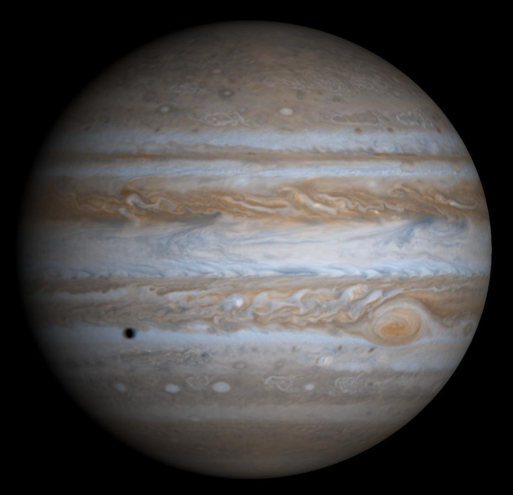

Jupiter, the largest planet in the Solar System

Jupiter
Jupiter is the fifth planet from the Sun and the largest planet in the Solar System. It is a gas giant with mass one-thousandth of that of the Sun but is two and a half times the mass of all the other planets in the Solar System combined. Jupiter is classified as a gas giant along with Saturn, Uranus and Neptune. Together, these four planets are sometimes referred to as the Jovian or outer planets.

Orbital Characteristics
- Aphelion
- 816 520 800km
- Perihelion
- 740 573 600km
- Orbital Period
- 4 332.59d
- Average Orbital Speed
- 13.07km/s
Physical Characteristics
- Mean Radius
- 69911±6 km
- Mass
- 1.8986×1027 kg
- Surface Gravity
- 24.79 m/s2
- Axial Tilt
- 3.13°